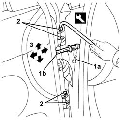
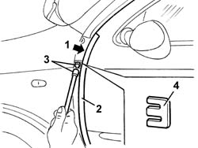
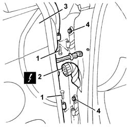

7005A14 FRONT SIDE DOOR - ADJUST CENTERING AND MOULDING - INCLUDES ADAPTATION OF HINGES AND SEALS ON DOOR COMPARTMENT
- Path
- Procedures > 70 FITTINGS > 7005 PASSENGER COMPARTMENT FRONT SIDE DOORS > 7005A LOCATION OF FRONT DOOR WIND NOISES > 7005A14 FRONT SIDE DOOR - ADJUST CENTERING AND MOULDING - INCLUDES ADAPTATION OF HINGES AND SEALS ON DOOR COMPARTMENT
- Kind
- repair procedure (removal / refitting; the operation number is the code)
- Applies to
- all engines; all production periods
- Interactive page
- https://sloeber94.github.io/elrnDB-aGt/en/#/125001759
Applies to: all engines; all production periods
1. Undo the bolt (1a) of the door check strap (1b) and close the door again to push the check strap back in.
2. Loosen the bolts using the appropriate tool.
 | Name | Country |
|---|---|---|
2 | Key | 1.822.120.000 |
3. Adjust the door position, making use of the bolt slots, so that it is perfectly aligned with the body.

Applies to: all engines; all production periods
Fit shims between hinge and door if necessary to ensure the door is adjusted properly, proceeding as follows (the hinge position is adjusted using the door as reference).
Remove the door striker.
Op. 7005B14 FRONT SIDE DOOR CATCH STRIKER R R
Working as described above, slacken the hinge bolts slightly.
1. Move the door back in relation to the hinge attachment.
2. Protect sharp edges of the body with adhesive tape.
3. Undo the retaining bolts.
4. Fit the shims.

Applies to: all engines; all production periods
Screw in the bolts without tightening.
Adjust the door position, making use of the movements of the bolt attachment plate, so that it is perfectly aligned with the body.
Refit the door striker.
Op. 7005B14 FRONT SIDE DOOR CATCH STRIKER R R
Tighten the bolts with the appropriate tool.
| Name | Country |
|---|---|---|
2 | Key | 1.822.120.000 |
1. After adjustment, undo the bolts on the hinge pins.
2. Disconnect the electrical connection.
Name | Connector | |
|---|---|---|
2 | Rear coupling for front door driver's side | See D30 REAR COUPLING FOR /FRONT DOOR. DRIVER'S SIDE |
Name | Connector | |
|---|---|---|
2 | Front passenger door rear coupling | See D31 RIGHT FRONT DOOR REAR COUPLING/. |
3. Lift the door and remove it.
4. Tighten the hinge bolts.
 | Fastening | Component | Ø | Value (daNm) |
|---|---|---|---|---|
4 | Bolt | FRONT SIDE DOOR HINGES | M10 | 4.5 |

Applies to: all engines; all production periods
Touch up the paintwork in the hinge area.
Refit the door, securing it with the hinge pin bolts.
| Fastening | Component | Ø | Value (daNm) |
|---|---|---|---|---|
- | Bolt | FRONT SIDE DOOR HINGES | M6 | 1.5 |
Connect the electrical connection.
Check the various appliances on the door are working properly.
Make the door check strap come out and tighten its bolt.
Check that the striker and catch fit together properly. If necessary
Op. 7005A10 FRONT SIDE DOOR - ADJUST STRIKER AND ADAPT SEAL IN NECESSARY.
Carry out the electric windows control unit programming cycle
Op. 7005M40 FRONT ELECTRIC WINDOW SYSTEM ECU - R+R FOLLOWING ELECTRICAL WIRING CHECK.
If necessary, adjust the lowering window glass
Op. 7005D14 FRONT SIDE DOOR DESCENDING WINDOW GLASS - R R WITH DOOR PANEL (AND MOUNT FRAME) REMOVED.
Topics linked from this page (4)
- 7005A10 FRONT SIDE DOOR - ADJUST STRIKER AND ADAPT SEAL IN NECESSARY
- 7005B14 FRONT SIDE DOOR CATCH STRIKER R R
- 7005D14 FRONT SIDE DOOR DESCENDING WINDOW GLASS - R R WITH DOOR PANEL (AND MOUNT FRAME) REMOVED
- 7005M40 FRONT ELECTRIC WINDOW SYSTEM ECU - R+R FOLLOWING ELECTRICAL WIRING CHECK